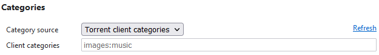

Add Torrent To User Manual
Add Torrent To allows to instantly begin a download of the torrent into a configurable set of directories or categories available from the browser context menu. It may be useful for preventing clutter in the download directory.
To begin a download, right-click the link to of a torrent file or a magnet link and select the desired category from the "Add Torrent To" submenu. The download of the torrent will start immediately to the selected directory or category.
If the attempt to add a torrent is failed, the add-on will notify you through a standard browser toast notification. Please check your system tray if something goes wrong.
Add Torrent To supports both the downloads in plain subdirectories of the main torrent download folder and the downloads with the torrent categories provided by the torrent client. In the recent case, it is possible to specify a custom download directory for each category in the torrent client settings. Such directories may be completely unrelated to the main torrent download folder. Please see the section below for the details on configuring your torrent client.
Configuring qBittorrent
Enable WebUI in qBittorrent settings and specify username and password. It is possible to bypass authentication for the local addresses, or addresses from the local network. If IPv6 is enabled in your router, it is necessary to specify an IPv6 subnet mask (for example, fe80::/64).
Using download categories provided by the torrent client instead of plain folders requires additional configuration. It is necessary to enable one of the two following settings:
- Set the Default Torrent Management Mode to Automatic.
- Check the Use Category paths in Manual Mode option.
Use the category context menu in the qBittorrent sidebar to add new categories.
The Add Torrent To may be not able to load categories from the torrent client if the client was started after the browser was loaded. In this case, use the [refresh] context menu item or the corresponding link in the add-on settings to obtain the download categories.
Configuring uTorrent
Enable WebUI in uTorrent settings and specify username and password.
Specify the default download directory.

uTorrent does not support retrieval of torrent download categories (in uTorrent they are called labels) through the Web API.
Configuring the Extension
Specify the torrent client name, WebUI URL, and authentication credentials you configured in the torrent client at the previous steps.
Specify the torrent download category source, and the categories separated by the colon character if you are using the user-provided categories.

In the extension settings, it is not possible to edit or reorder download categories obtained from the torrent client.